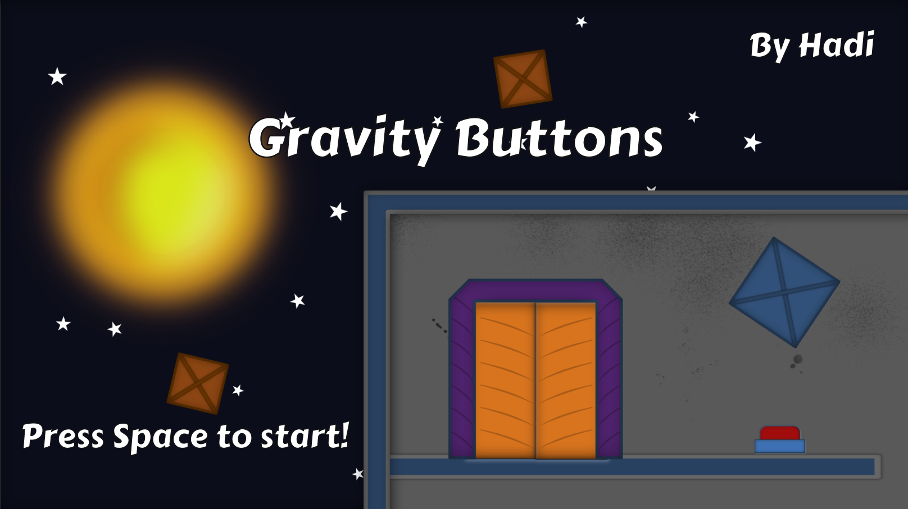
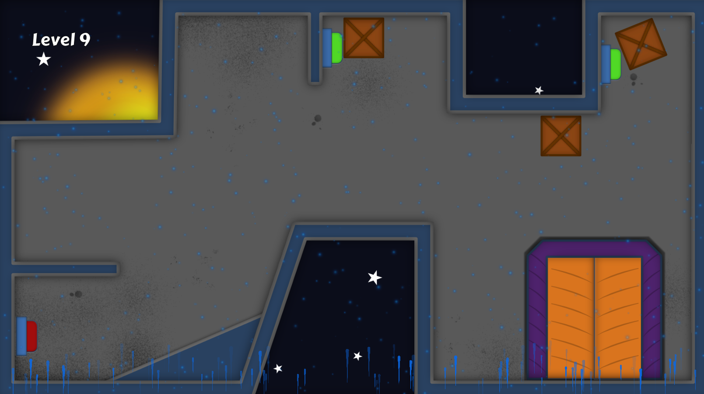

Gravity Buttons
July 3rd, 2018
You can play Gravity Buttons here.
Gravity Buttons is a physics based puzzle game made for the GDQ One Mechanic Game Jam 4. The theme was gravity, and the challenge was to only have one mechanic in the game.
In Gravity Buttons, you can change the direction of gravity. Each level has at least one button, and your goal is to have all buttons pressed at the same time in order to open the door and advance to the next level. To press the buttons, you have to change the gravity and maneuver the boxes, which can get tricky.
Due to the nature of the jam, focusing on only one mechanic, this has turned out to be my most polished solo game yet. All of my attention was spent on getting this one mechanic right.
Code-wise, this was a simple project. I think I spent more time on the gravity direction particle effect and the art and level design than I did on the code.
Looking Back
My only regret with this one is not having more levels. It's pretty decent the way it is. Maybe it could have used a few tweaks, but considering the nature of the jam, I'm very happy with this one.
